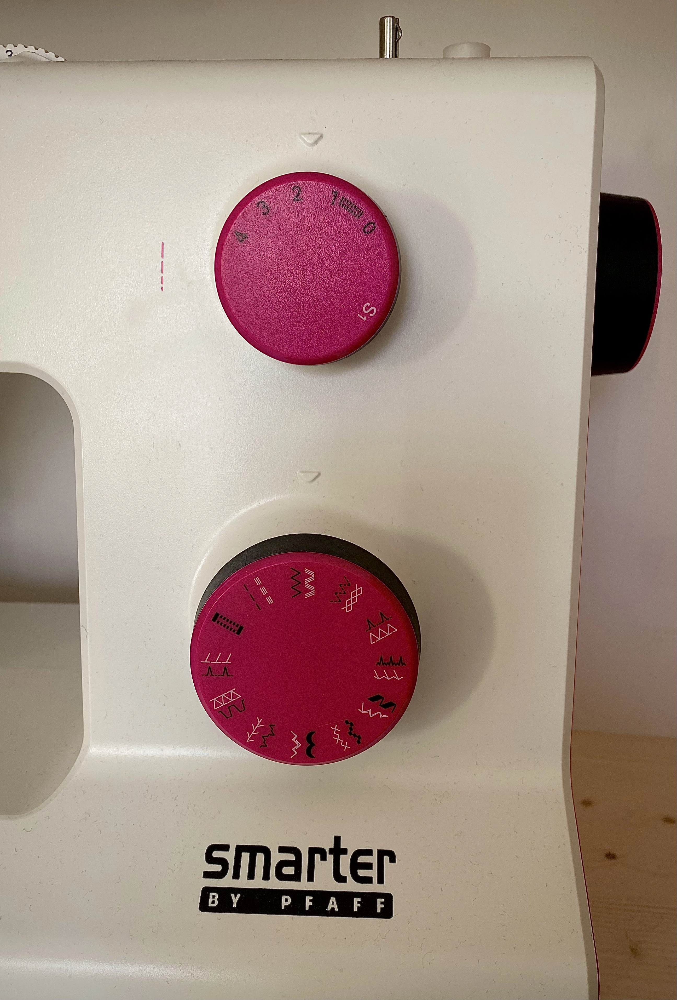
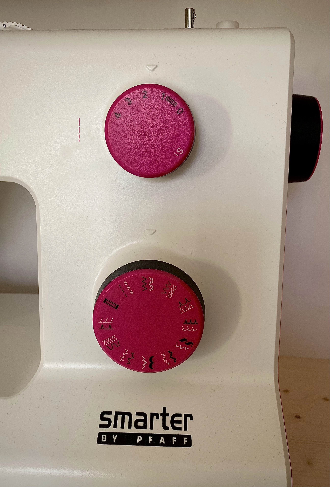

Nybegynderens guide

Muleposen
Dette er en enkel og fin taske, som er uundværlig i din hverdag og er et perfekt projekt til nybegynderen ved symaskinen.
Jeg bruger min mulepose til alverdens ting f.eks. som erstatning til plasticposen, når jeg handler ind, eller bruger den til at opbevare min computer, vandflaske og hækletøj, når jeg skal i skole.
Med et sengebetræk, en gammel dug eller en herreskjorte kan du nemt lave din version af muleposen.
Materialer
Et stykke tætvævet stof såsom bomuld (ca. 50 cm x 100 cm eller efter ønske)
Sytråd i passende farve
Redskaber
Symaskine
Saks
Knappenåle
Kridt
Målebånd eller lignende
Sikkerhedsnål
Strygejern og strygebræt
Kom i gang
- Fold stoffet dobbelt med retsiden indad.
- Mål og tegn ved hjælp af målebåndet og kridtet et rektangel, der måler 40 x 50 cm.
- Mål og tegn et rektangel, der måler 10 x 50 cm til stropperne.
- Klip dem ud.
Du har nettets sider og to stropper.
- Ved brug af din symaskine skal du zigzagge langs alle kanterne.
- Læg stoffet dobbelt igen (ret mod ret). Sy nu langs de to lange sider med ligesøm. Brug 1 cm sømrum.
- Vend posen med retsiden ud, så sømmene er inden i.
- Fold den øverste åbne kant indad ca. 2 cm for at forstærke bærestykket.
- Sy langs kanten.
Du har nu selve posen.
- Sæt med knappenåle stropperne på posens vrangside, ca. 10 cm fra sidesømmene.
- Sy med en stikning frem og tilbage et par gange, oven i hinanden, hen over stropperne, så de kommer til at sidde godt fast.
- Klip løse tråde af og din mulepose er klar til brug!
Nu har du din helt egen genanvendelige mulepose, som du kan tage med til indkøb, på stranden eller bruge som skoletaske.

 
